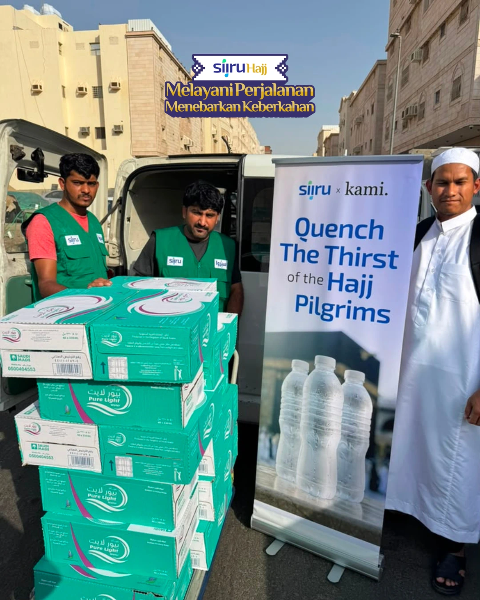

Niat baik.
Dampak nyata.
Jarak bukan penghalang untuk berbagi. Bersama Siiru, kebaikan Anda hadir bagi jamaah dan masyarakat di Tanah Suci.
Laporan publik, tanpa login
Lihat rangkuman kegiatan dan jumlah penyaluran dari setiap program. Siapa pun bisa menjelajahi laporan ini.
Donasi pribadi? Ada di Siiru App.
Untuk melihat status dan detail donasi milik Anda, buka Siiru App. Informasi pribadi donatur tidak ditampilkan di halaman publik ini.
Kenali Siiru App ↗Bentuk kebaikan.
Satu tujuan mulia.
Kota penyaluran
dalam contoh laporan.
Dari Anda.
Untuk mereka.
Jelajahi dampaknya 
Bersama SiiruBanyak cara untuk
menebar kebaikan.
Dari seteguk air hingga manfaat
yang terus mengalir.
Botol air
Bukan sekadar memberi.
Hadir dan berarti.
Ada kebersamaan di balik setiap penyaluran. Intip momen kebaikan bersama Siiru.
JELAJAHI GALERISetiap titipan,
ada jejaknya.
Lihat perjalanan kebaikan di Arab Saudi.
Terbuka untuk semua, tanpa perlu login.
Donasi Anda.
Ceritanya ada di
Siiru App
Laporan di website ini untuk semua orang. Untuk melihat status dan detail donasi pribadi Anda, lanjutkan melalui Siiru App.
Setiap kebaikan punya cerita.
Donasi saya.
Detail yang hanya
bisa Anda lihat.
Sedikit tanya.
Lebih banyak yakin.
Apakah perlu akun untuk melihat laporan?
Tidak. Semua laporan kegiatan pada landing page ini terbuka untuk umum dan dapat dilihat tanpa login.
Di mana saya melihat detail donasi saya?
Detail dan status donasi pribadi hanya dapat dilihat melalui Siiru App. Buka aplikasi dengan akun yang Anda gunakan untuk berdonasi.
Dapatkan Siiru App ↗Apakah data di halaman ini sudah resmi?
Belum. Jumlah, tanggal, lokasi kegiatan, serta status merupakan data demo. Foto kegiatan berasal dari laporan publik Siiru Haji 1447H sebagai referensi, bukan bukti untuk kegiatan demo.
Di mana kebaikan ini disalurkan?
Halaman ini mencakup penyaluran di Arab Saudi. Contoh laporan menampilkan Makkah, Madinah, dan Jeddah untuk tujuh program kebaikan.